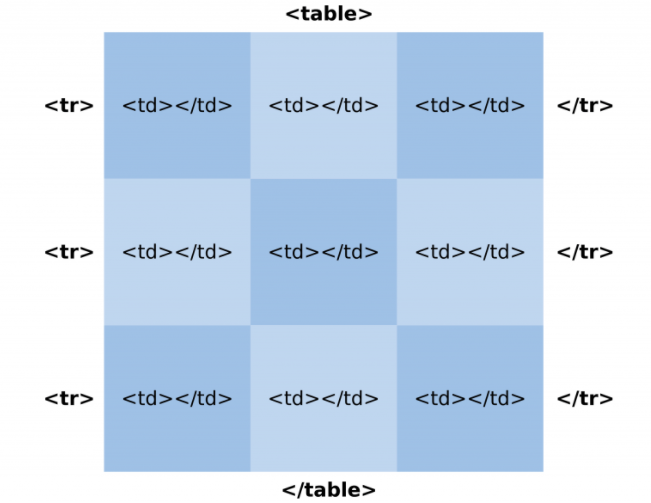

A tag utilizada para criar uma tabela HTML é a tag "table", posteriormente fechada com "table". Dentro dela, incluímos todos os elementos que compõem nossa tabela, ou seja, as células da tabela. Assim sendo, os elementos de uma tabela consistem em outras tags que poderão ser utilizadas. Nos próximos tópicos, veremos como utilizar cada uma delas.
Antigamente, as tabelas em HTML eram muito utilizadas acompanhadas de atributos. Com a adoção do CSS e do HTML5, esses atributos passaram a ser depreciados e, hoje em dia, são estilizados através da folha de estilos. Caso você tenha interesse em saber mais sobre os atributos, podem acessar a documentação oficial da W3C sobre tabelas. Contudo, nos exemplos desse tutorial, utilizaremos apenas o atributo border, para melhor exemplificar os códigos.
As tags que vão formar a estrutura básica de uma tabela em HTML são as tags "tr" e "td". A tag "tr" representa uma linha e a tag "td" representa uma célula. Desta forma, a criação de colunas em uma tabela HTML é feita automaticamente através da quantidade de células incluídas dentro de uma linha. Por exemplo, vejamos na imagem abaixo como essa estrutura é formada:
